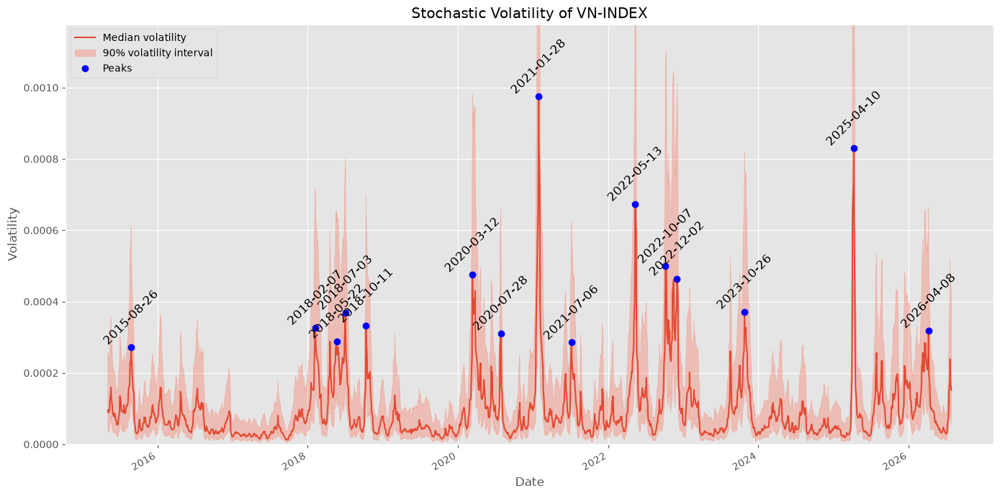

[playground] Stochastic Volatility Model for VNINDEX
play around with stochastic volatility
Market volatility is a double-edged sword: it exposes risks and reveals potential opportunities. This measure of price swings over time is a key input for sound investment strategies. Understanding volatility is essential for investors to navigate market complexities effectively.
Source code (this tutorial): https://github.com/quangtiencs/planting_of_a_tree_r360/blob/main/stochastic_volatility_model
Config
try:
from vector_field.clickhouse import ClickHouseClient
from vector_field.config import FilePathConfig
conn = ClickHouseClient()
df = conn.sql(
"""
SELECT DATE, CLOSE
FROM STOCK_MARKET_INDEX
WHERE MARKET_INDEX = 'VNINDEX'
AND "DATE" > '2015-04-30'
ORDER BY DATE
"""
).df()
df.to_csv("vnindex.csv", index=False)
except Exception as e:
print("Awww, you can try my demo data")
df = pd.read_csv("vnindex.csv")
df["DATE"] = pd.to_datetime(df["DATE"])
df = df.set_index("DATE")| CLOSE | |
|---|---|
| DATE | |
| 2015-05-04 | 545.080017 |
| 2015-05-05 | 552.650024 |
| 2015-05-06 | 549.299988 |
| 2015-05-07 | 552.979980 |
| 2015-05-08 | 554.510010 |
| ... | ... |
| 2026-07-22 | 1668.530029 |
| 2026-07-23 | 1699.380005 |
| 2026-07-24 | 1686.109985 |
| 2026-07-27 | 1669.010010 |
| 2026-07-28 | 1680.619995 |
2810 rows × 1 columns
| CLOSE | change | |
|---|---|---|
| DATE | ||
| 2015-05-05 | 552.650024 | 0.013793 |
| 2015-05-06 | 549.299988 | -0.006080 |
| 2015-05-07 | 552.979980 | 0.006677 |
| 2015-05-08 | 554.510010 | 0.002763 |
| 2015-05-12 | 544.409973 | -0.013247 |
Model
# this code fork from stan
# https://github.com/stan-dev/example-models/blob/master/misc/moving-avg/stochastic-volatility-optimized.stan
stan_model = """
data {
int<lower=0> T; // # time points (equally spaced)
vector[T] y; // mean corrected return at time t
}
parameters {
real mu; // mean log volatility
real<lower=-1, upper=1> phi; // persistence of volatility
real<lower=0> sigma; // white noise shock scale
vector[T] h_std; // std log volatility time t
}
transformed parameters {
vector[T] h; // log volatility at time t
h = h_std * sigma;
h[1] = h[1] / sqrt(1 - phi * phi);
h = h + mu;
for (t in 2 : T) {
h[t] = h[t] + phi * (h[t - 1] - mu);
}
}
model {
sigma ~ cauchy(0, 5);
mu ~ cauchy(0, 10);
h_std ~ normal(0, 1);
y ~ normal(0, exp(h / 2));
}
"""
stan_file = os.path.join(
StochasticVolatilityConfig.ROOT_DIR, "stochastic-volatility-optimized.stan"
)
with open(stan_file, mode="w") as file:
file.write(stan_model)00:36:43 - cmdstanpy - INFO - compiling stan file /Users/quangtiencs/SigmaDataset/stochastic-volatility-optimized.stan to exe file /Users/quangtiencs/SigmaDataset/stochastic-volatility-optimized
00:36:47 - cmdstanpy - INFO - compiled model executable: /Users/quangtiencs/SigmaDataset/stochastic-volatility-optimized{'stan_version_major': '2', 'stan_version_minor': '39', 'stan_version_patch': '0', 'STAN_THREADS': 'false', 'STAN_MPI': 'false', 'STAN_OPENCL': 'false', 'STAN_NO_RANGE_CHECKS': 'false'}00:36:47 - cmdstanpy - INFO - CmdStan start processing 00:37:06 - cmdstanpy - INFO - CmdStan done processing.
00:37:06 - cmdstanpy - WARNING - Non-fatal error during sampling:
Exception: normal_lpdf: Scale parameter[1] is 0, but must be positive! (in 'stochastic-volatility-optimized.stan', line 25, column 2 to column 28)
Exception: normal_lpdf: Scale parameter[1] is 0, but must be positive! (in 'stochastic-volatility-optimized.stan', line 25, column 2 to column 28)
Exception: normal_lpdf: Scale parameter[1] is 0, but must be positive! (in 'stochastic-volatility-optimized.stan', line 25, column 2 to column 28)
Exception: normal_lpdf: Scale parameter[1] is nan, but must be positive! (in 'stochastic-volatility-optimized.stan', line 25, column 2 to column 28)
Exception: normal_lpdf: Scale parameter[1] is nan, but must be positive! (in 'stochastic-volatility-optimized.stan', line 25, column 2 to column 28)
Exception: normal_lpdf: Scale parameter[1] is nan, but must be positive! (in 'stochastic-volatility-optimized.stan', line 25, column 2 to column 28)
Exception: normal_lpdf: Scale parameter[1] is nan, but must be positive! (in 'stochastic-volatility-optimized.stan', line 25, column 2 to column 28)
Exception: normal_lpdf: Scale parameter[1] is 0, but must be positive! (in 'stochastic-volatility-optimized.stan', line 25, column 2 to column 28)
Exception: normal_lpdf: Scale parameter[1] is nan, but must be positive! (in 'stochastic-volatility-optimized.stan', line 25, column 2 to column 28)
Exception: normal_lpdf: Scale parameter[1] is 0, but must be positive! (in 'stochastic-volatility-optimized.stan', line 25, column 2 to column 28)
Consider re-running with show_console=True if the above output is unclear!Checking sampler transitions treedepth.
Treedepth satisfactory for all transitions.
Checking sampler transitions for divergences.
No divergent transitions found.
Checking E-BFMI - sampler transitions HMC potential energy.
E-BFMI satisfactory.
Rank-normalized split effective sample size satisfactory for all parameters.
Rank-normalized split R-hat values satisfactory for all parameters.
Processing complete, no problems detected.
Trace plot
Stochastic Volatility
var = "h"
volatility = np.exp(fit.draws_pd(var).T)
median = volatility.quantile(q=0.5, axis=1)
low = volatility.quantile(q=0.05, axis=1)
high = volatility.quantile(q=0.95, axis=1)
peaks, properties = find_peaks(median, height=np.percentile(median, 95), distance=20)
median.index = returns.index
fig, ax = plt.subplots(figsize=(14, 7))
median.plot(ax=ax, label="Median volatility")
ax.fill_between(
returns.index, low, high, color="tomato", alpha=0.3, label="90% volatility interval"
)
ax.plot(
median.index.values[peaks], median.values[peaks], "o", label="Peaks", color="blue"
)
# Add annotations for peak dates
for i in peaks:
peak_date = median.index[i].strftime("%Y-%m-%d") # Format date nicely
ax.text(
median.index[i],
median.values[i],
peak_date,
fontsize=12,
color="black",
ha="center",
va="bottom",
rotation=45,
)
plt.legend()
plt.ylim([0, np.percentile(high, 99.3)])
plt.xlabel("Date")
plt.ylabel("Volatility")
plt.title("Stochastic Volatility of VN-INDEX")
plt.tight_layout()
plt.savefig("Stochastic_Volatility_VNINDEX.png")
plt.show()/var/folders/qv/trwv90rj57g44kd978yj9cym0000gn/T/ipykernel_66299/2275497795.py:16: UserWarning: This axis already has a converter set and is updating to a potentially incompatible converter
ax.plot(
array(['2015-08-26T00:00:00.000000000', '2018-02-07T00:00:00.000000000',
'2018-05-22T00:00:00.000000000', '2018-07-03T00:00:00.000000000',
'2018-10-11T00:00:00.000000000', '2020-03-12T00:00:00.000000000',
'2020-07-28T00:00:00.000000000', '2021-01-28T00:00:00.000000000',
'2021-07-06T00:00:00.000000000', '2022-05-13T00:00:00.000000000',
'2022-10-07T00:00:00.000000000', '2022-12-02T00:00:00.000000000',
'2023-10-26T00:00:00.000000000', '2025-04-10T00:00:00.000000000',
'2026-04-08T00:00:00.000000000'], dtype='datetime64[ns]')References
- Stan Probabilistic Programming. Stochastic-volatility models. https://mc-stan.org/docs/stan-users-guide/time-series.html#stochastic-volatility-models